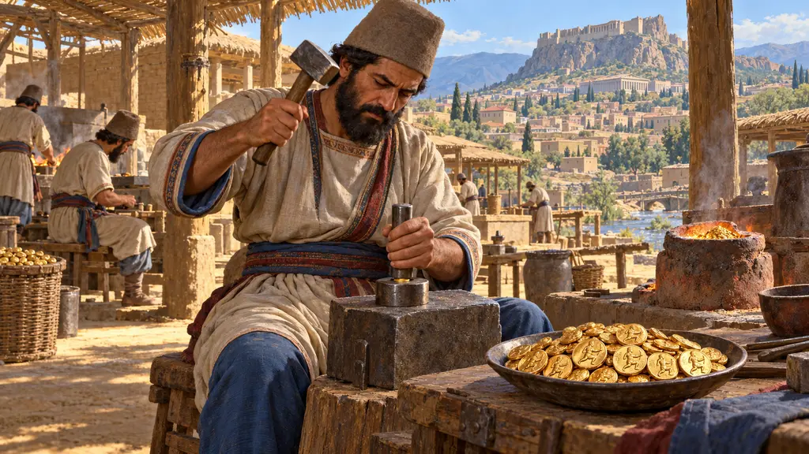
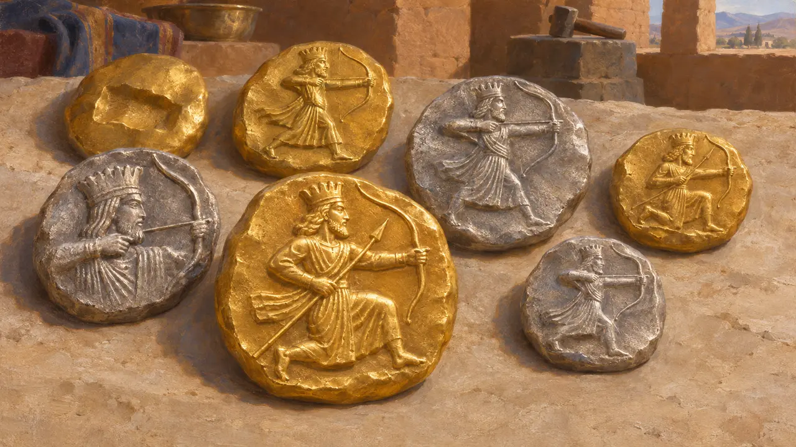
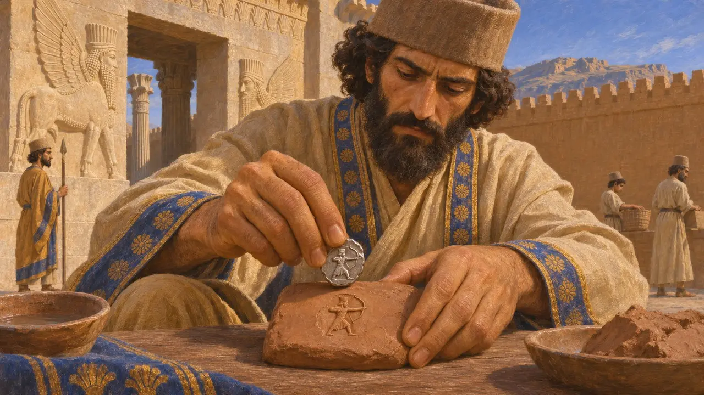
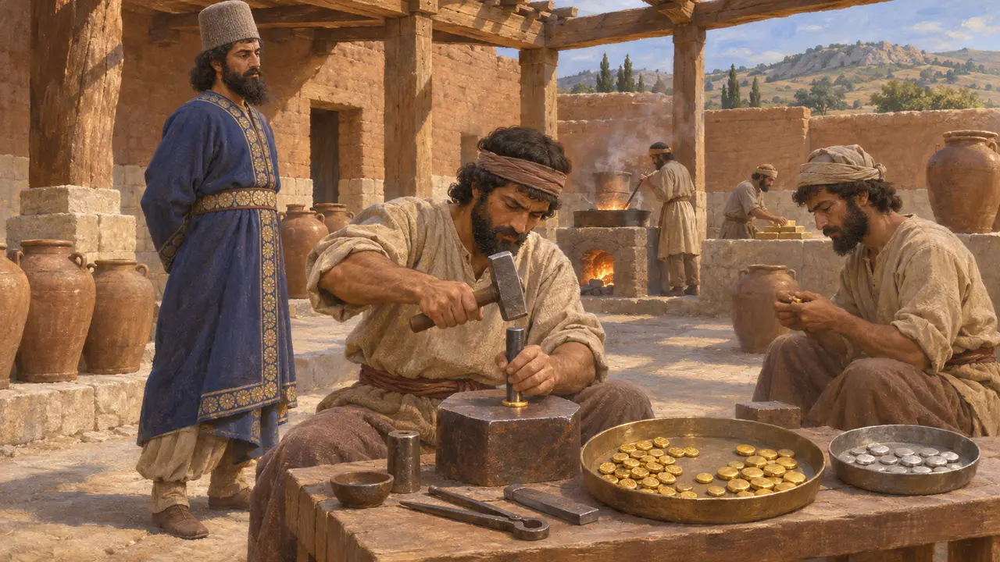
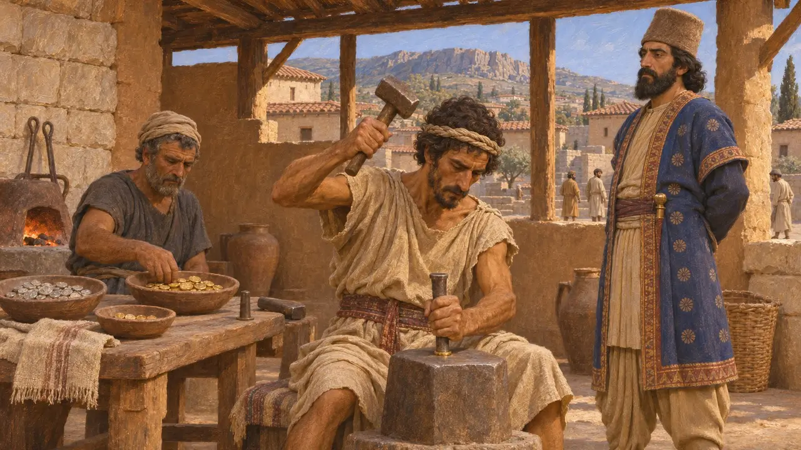
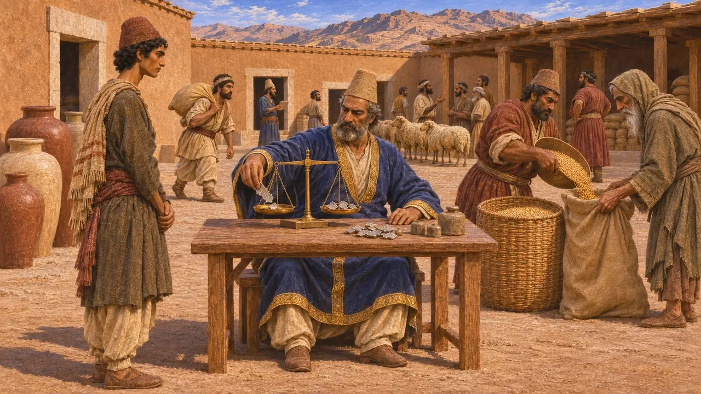

ضرب دریک
نخستین ضرب سکهٔ شاهی پارسی از زر و نقره، احتمالاً در سارد، حدود 510 تا 500 پ.م.
در بازی: مرحلهٔ ۷: سارد میسوزد
در روزگار داریوش امپراتوری آغاز به ضرب سکههای خود کرد: دریک زرین و سیگلوس سیمین، که هر دو کمانداری تاجدار را نشان میدادند. این سکهها از سکههای زر و سیم لیدیه که به کرزوس نسبت میدهند در غرب آسیای صغیر پیروی میکردند و نزد یونانیان بیش از هر چیز نشانهٔ ثروت پارسی شدند. در درون پارس بیشتر پرداختها هنوز بهصورت جنسی یا با نقرهٔ وزنشده به شِکل انجام میشد.
در بازی: بازی فرمانی نمایشی از داریوش را نشان میدهد که در سارد دریک و سیگلوس را پدید میآورد، در حدود 510-500 پ.م. هیچ متنی سارد را ضرابخانه نمینامد، و نخستین سکههای کماندار فقط نقرهای بودند.

خود سکهها
در اسنادسکههای بازمانده در چند گونهٔ اندک جای میگیرند. کهنترینها ظاهراً سیگلوسهای نقرهایاند با نقش کمانداری تاجدار تا میانتنه. گونههای بعدی کماندار را در حالت زانو زده یا دوان نشان میدهند، که یا کمان میکشد یا نیزه و کمان در دست دارد، و اینها هم از زر و هم از نقره ضرب شدهاند. یک دریک حدود 8.4 گرم زر بسیار ناب وزن داشت و یک سیگلوس کهن حدود 5.4 گرم نقره.
I. Carradice, The 'regal' coinage of the Persian empire, 1987

سکهای که بر لوحی از تخت جمشید نقش بسته است
در اسنادیکی از مأموران تخت جمشید سیگلوس نقرهای از نوع کماندار را مهر خود کرده بود که با نشانهٔ PFS 1393s فهرست شده است. نقش آن بر لوحهای استحکامات مربوط به سال 22 داریوش، یعنی حدود 500 پ.م.، دیده میشود. این نشان میدهد که سکههای کماندار تا آن تاریخ در کار بودهاند.
M. C. Root, Evidence from Persepolis for the dating of Persian and Archaic Greek coinage, 1988

هرودوت دربارهٔ داریوش و آریاندس
روایت باستانیهرودوت میگوید داریوش زر را به بالاترین درجهٔ پاکی پالود و از آن سکه زد. آریاندس، ساتراپ مصر، سپس نقرهای همناب با آن سکه زد و داریوش او را کشت، ظاهراً به اتهام شورش. هرودوت همچنین میگوید پوتیوسِ لیدیایی نزدیک به چهار میلیون دریک زرین به خشایارشا پیشکش کرد، رقمی که احتمالاً گزافه است. او میافزاید که شاه باج را بهصورت فلزِ گداخته در خمرهها نگه میداشت.
Herodotus 4.166; Herodotus 7.28; Herodotus 3.96

تاریخها، ضرابخانه و کماندار
مورد مناقشهدر سپردههای بنیادین آپادانا در تخت جمشید سکههای لیدیایی و یونانی یافت شد، اما هیچ سکهٔ کماندار در آنها نبود. برخی پژوهشگران از این نتیجه میگیرند که ضرب سکهٔ شاهی تنها پس از نهادن این سپردهها آغاز شد. محل یافتن سکهها و سنت لیدیایی سارد را ضرابخانهٔ محتمل میسازد، اما هیچ متنی آن را نام نمیبرد. پژوهشگران همچنین بر سر این بحث دارند که کماندار خود شاه است یا یک قهرمان شاهی، و نام دریک از داریوش گرفته شده است یا نه.
P. Briant, From Cyrus to Alexander, 2002

جیره و نقرهٔ سنجیده در سرزمین مرکزی
در اسنادلوحهای استحکامات تخت جمشید جیرههای کارگران را بیشتر به صورت جنسی ثبت میکنند: غله، شراب، آبجو و دام. لوحهای خزانه برخی پرداختها را به شِکل نقره با سنجش وزنی ثبت میکنند، نه با سکههای شمردهشده. سکههای کماندار بیشتر در غرب آسیای صغیر یافت میشوند، پس ضرب سکه احتمالاً به ولایات غربی و داد و ستد با یونانیان خدمت میکرد.
G. G. Cameron, Persepolis Treasury Tablets, 1948; P. Briant, From Cyrus to Alexander, 2002
منابع
- Herodotus 4.166
- M. C. Root, Evidence from Persepolis for the dating of Persian and Archaic Greek coinage, 1988
- I. Carradice, The 'regal' coinage of the Persian empire, 1987
- P. Briant, From Cyrus to Alexander, 2002
- G. G. Cameron, Persepolis Treasury Tablets, 1948
- Herodotus 7.28; Herodotus 3.96